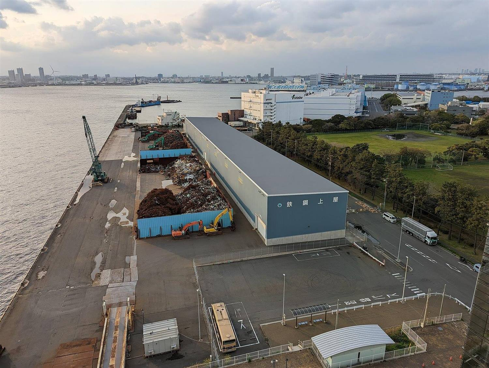
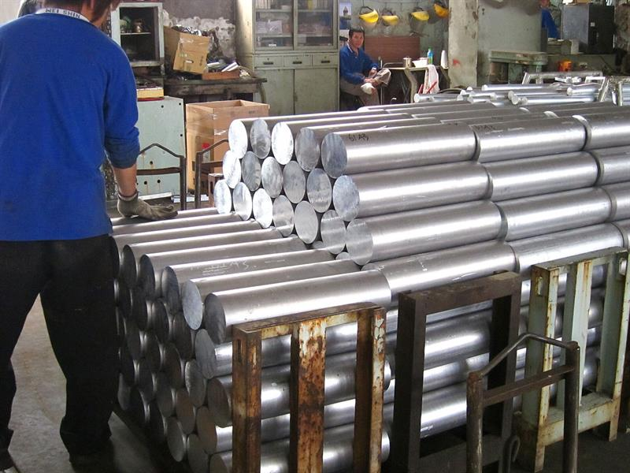
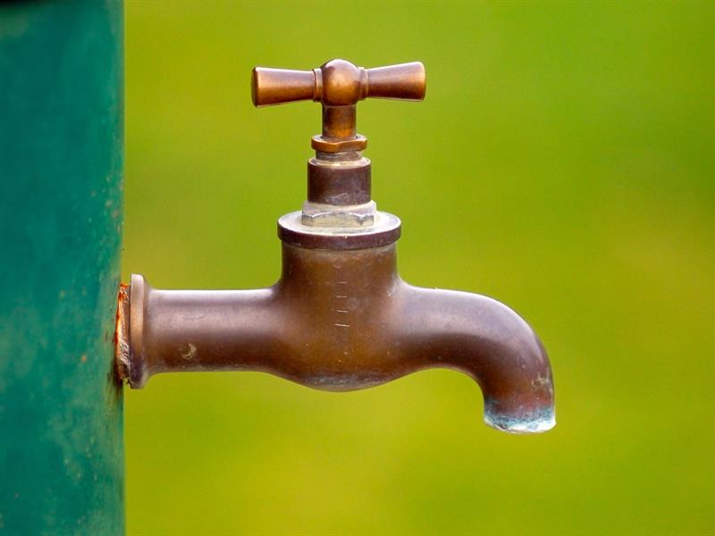
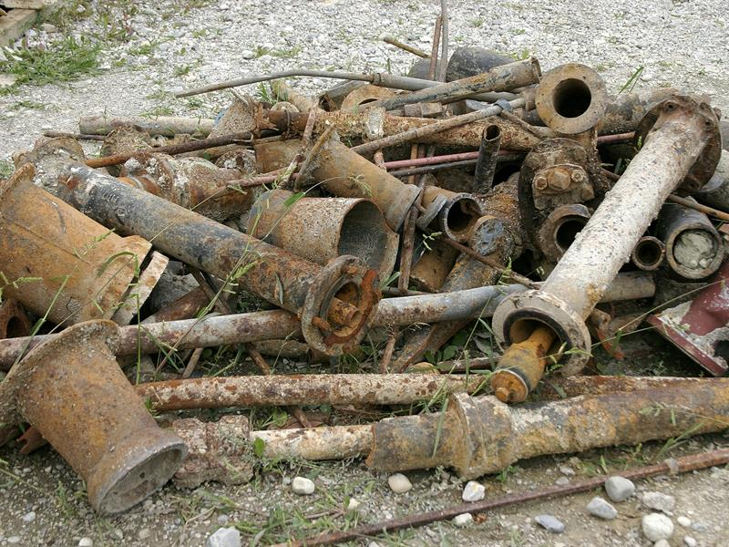

- Beranda
- Tentang
Tentang CV Indo Jaya
Pembeli limbah besi tua, tembaga, aluminium, kuningan, dan stainless untuk pabrik, gudang, serta kawasan industri. Volume besar, penimbangan transparan, administrasi lengkap.

Melayani industri sejak 2010*Angka sementara untuk pratinjau desain.
Profil perusahaan
Siapa CV Indo Jaya
CV Indo Jaya adalah pembeli limbah besi dan logam yang bekerja untuk kebutuhan industri. Kami membeli besi tua, scrap metal, tembaga, aluminium, kuningan, dan stainless langsung dari pabrik, gudang, serta fasilitas produksi — bukan dari rumah tangga.
Fokus kami sederhana: membuat proses menjual limbah logam jadi rapi dan terukur. Penawaran dihitung dari jenis dan kadar material, penimbangan bisa disaksikan penjual, dan setiap pengiriman dilengkapi berita acara serta surat jalan untuk pembukuan perusahaan.


Yang kami layani
- Pabrik manufaktur dengan limbah produksi rutin.
- Gudang dan fasilitas produksi yang menyimpan scrap dalam jumlah besar.
- Kawasan industri yang membutuhkan pengangkutan terjadwal.
- Perusahaan yang butuh pengambilan bertahap untuk volume besar.
Prinsip kerja
- Penawaran terbuka, dihitung dari jenis, kadar, dan volume material.
- Penimbangan di jembatan timbang resmi dan dicatat di berita acara.
- Dokumen serah terima lengkap untuk pembukuan dan audit internal.
- Jadwal pengambilan disusun agar material tidak menumpuk di area pabrik.
Lihat jenis limbah yang kami terima atau alur cara menjual untuk gambaran prosesnya.
Cara kami bekerja
Empat hal yang kami jaga di setiap transaksi
Menjual limbah pabrik bukan sekadar soal harga tertinggi. Yang menentukan adalah kejelasan hitungan, bukti timbangan, dan dokumen yang bisa dipertanggungjawabkan.
Harga mengikuti pasar
Nilai dihitung dari jenis, kadar, dan volume material — bukan angka rata-rata yang sama untuk semua limbah.
Timbangan terbuka
Penimbangan dilakukan di jembatan timbang resmi, hasilnya dicatat, dan penjual bisa ikut menyaksikan.
Dokumen rapi
Berita acara penimbangan dan surat jalan disiapkan untuk pembukuan, audit internal, dan pencatatan aset.
Jadwal terkendali
Pengangkutan bisa bertahap agar area pabrik tidak penuh dan aktivitas produksi tetap berjalan.
Material
Jenis limbah logam yang kami beli
Kami membeli limbah logam dari proses produksi, perawatan mesin, dan bongkaran fasilitas pabrik. Setiap jenis dihitung terpisah sesuai kadar dan kondisi material.

Besi tua
Scrap besi, potongan mesin, dan struktur bekas dari area produksi.
Lihat detail
Tembaga
Kabel, busbar, dan komponen tembaga sisa instalasi industri.
Lihat detail
Aluminium
Profil, plat, dan komponen aluminium sisa produksi atau renovasi.
Lihat detail
Kuningan
Fitting, keran, dan komponen kuningan bekas dari sistem perpipaan.
Lihat detail
Stainless steel
Scrap stainless dari dapur produksi, tangki, dan peralatan pabrik.
Lihat detail
Besi cor
Cast iron scrap dari mesin, pipa, dan komponen berbobot berat.
Lihat detailDokumentasi
Dari sortir sampai bongkar muat
Gambaran alur kerja di lapangan: material diperiksa, dipilah, ditimbang, lalu diangkut dengan jadwal yang disepakati.


Alur kerja
Cara menjual limbah ke CV Indo Jaya
Empat langkah, tanpa survei berulang. Setelah data limbah diterima, tim kami menyusun penawaran dan jadwal pengangkutan.
-
LANGKAH 01
Kirim data limbah
Jenis material, perkiraan volume, lokasi pabrik, dan foto limbah via WhatsApp.
-
LANGKAH 02
Terima penawaran
Tim menghitung nilai dari jenis dan kadar material, lalu mengirim penawaran.
-
LANGKAH 03
Penimbangan
Material diangkut dan ditimbang di jembatan timbang resmi, disaksikan penjual.
-
LANGKAH 04
Pembayaran & dokumen
Pembayaran setelah berita acara ditandatangani, surat jalan diserahkan.
Jangkauan
Wilayah layanan
Pengangkutan dijadwalkan dari gudang kami di Jakarta Timur menuju lokasi pabrik. Area utama ada di Jabodetabek dan koridor industri Jawa Barat.
- Jakarta
- Bekasi
- Cikarang
- Karawang
- Tangerang
- Bogor
- Bandung
- Serang
Lokasi di luar daftar?
Kirim alamat pabrik dan perkiraan volume. Tim akan menilai kelayakan pengangkutan, jadwal, dan biaya angkutnya sebelum penawaran.
Cek lokasi sayaFAQ
Pertanyaan umum soal jual limbah besi
Jawaban singkat untuk pertanyaan yang paling sering masuk dari tim purchasing dan pengelola gudang pabrik.
Apakah CV Indo Jaya membeli limbah besi dari pabrik?
Ya. Kami membeli limbah besi dan logam langsung dari pabrik, gudang, dan fasilitas produksi. Pembelian bersifat B2B dan tidak melayani rumah tangga.
Berapa volume minimal limbah yang bisa dijual?
Kami memprioritaskan volume besar agar pengangkutan efisien. Kirim perkiraan berat dan lokasi pabrik, tim akan menilai apakah pengambilan bisa dijadwalkan.
Bagaimana harga limbah besi ditentukan?
Harga mengikuti jenis logam, kadar material, kondisi, dan volume. Besi tua, tembaga, aluminium, dan kuningan dihitung terpisah, lalu ditawarkan per kilogram sebelum material diangkut.
Bagaimana proses penimbangan dan pembayaran?
Material ditimbang di jembatan timbang resmi. Hasil penimbangan dicatat dalam berita acara, dan pembayaran dilakukan setelah dokumen ditandatangani.
Apakah limbah bisa dijemput ke lokasi pabrik?
Bisa. Pengangkutan dijadwalkan sesuai volume dan akses kendaraan di lokasi, termasuk pengambilan bertahap untuk volume besar.
Apakah bisa kerja sama pengambilan rutin?
Bisa. Untuk pabrik dengan limbah produksi rutin, jadwal pengambilan dapat disusun berulang agar material tidak menumpuk di area kerja.
Dokumen apa saja yang disiapkan?
Berita acara penimbangan dan surat jalan. Dokumen ini bisa dipakai untuk pembukuan, audit internal, dan pencatatan aset perusahaan.
Apakah menerima limbah logam dari rumah tangga?
Tidak. CV Indo Jaya hanya melayani pembelian dari perusahaan, pabrik, gudang, dan kawasan industri.
Wilayah mana saja yang dilayani?
Area utama Jabodetabek, Cikarang, Karawang, dan Bandung. Untuk lokasi lain, kirim alamat pabrik untuk dicek jadwal dan biaya angkutnya.
Siap menjual limbah pabrik Anda?
Kirim jenis material, perkiraan volume, dan lokasi. Tim kami akan menghitung penawaran dan menyusun jadwal pengangkutan.